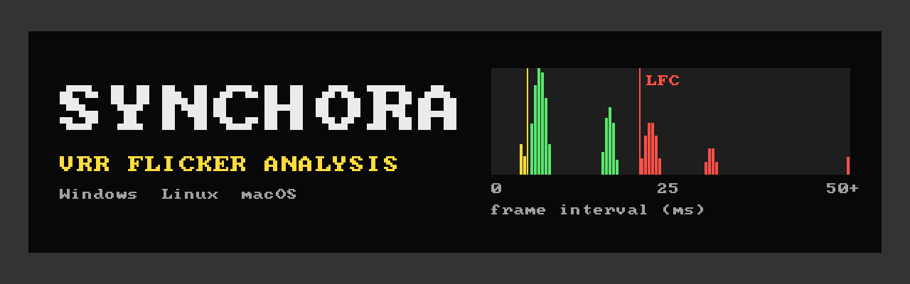

Bzzrt: VRR flicker test and LFC diagnostic
A free, open-source tool that finds out why a FreeSync, G-SYNC Compatible or Adaptive-Sync monitor flickers: low framerate compensation (LFC), uneven frame pacing, or the panel itself.
How it works
- Reads your monitor's VRR range from its EDID, or lets you type it in.
- Runs eight 10-second tests built from that range: steady frame rates inside it, just above and below the minimum, and frame rates switching across it.
- You press Y if you see flicker, N if not.
- It measures from the driver's timestamps whether every frame reached the screen on time, and combines that with your answers into a verdict: monitor, driver or compositor, or a known VRR side effect.
Native on every platform: Direct3D 12 on Windows, Vulkan (Wayland, X11) and direct DRM/KMS on Linux, Metal on macOS. An advanced test bench offers scripted spikes, jitter and rate switches, with CSV logs.
Common questions
Why does my FreeSync or G-SYNC Compatible monitor flicker at low FPS?
Below the VRR minimum (often 48 Hz) the panel cannot hold a frame any longer, so the driver shows frames twice or more (LFC), or the panel forces a repeat itself. Many panels, VA panels in particular, change brightness with how long each frame is held, so entering and leaving LFC shows up as flicker.
Is VRR flicker a defect of my monitor?
It depends on when it happens. Flicker at a steady frame rate inside the VRR range, with evenly timed frames, points to the monitor. Flicker only when the frame rate crosses the minimum, or only with uneven frame timing, is a known VRR side effect or a driver or compositor problem. Bzzrt tells you which.
How do I find my monitor's VRR range?
Bzzrt reads it from the monitor's EDID: the FreeSync data block, the DisplayID Adaptive-Sync block, the HDMI VRR range or the display range limits. If it is missing or wrong, enter the range from the spec sheet.
Does it work on Linux and Wayland?
Yes: KDE Plasma, GNOME, Hyprland and Sway on Wayland, X11, and a direct DRM/KMS mode that bypasses the compositor entirely.
More detail: the VRR and LFC guide and the full documentation.